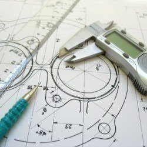
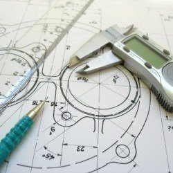

Bemutatkozás

Bemutatkozás
A nevem Domboróczki Dániel, a Budapesti Műszaki- és Gazdasági Egyetem tanulója vagyok, jelenleg a gépészmérnöki kar gépészmérnöki képzésének 2. félévében járok. Hobbim a zongorázás, de szabadidőmben szeretek photoshopolni és ebben a szemeszterben a modellezést is megkedveltem, ehhez az Inventor nevű programot használom. A jövőben a műszaki szakterületen belül géptervező mérnök szeretnék lenni.